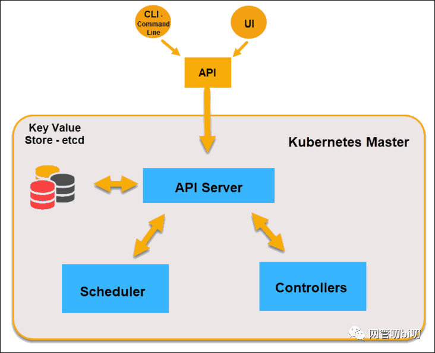
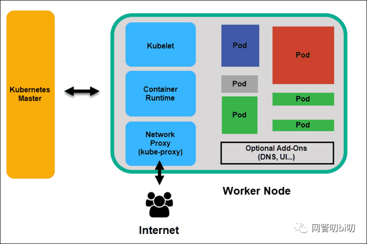
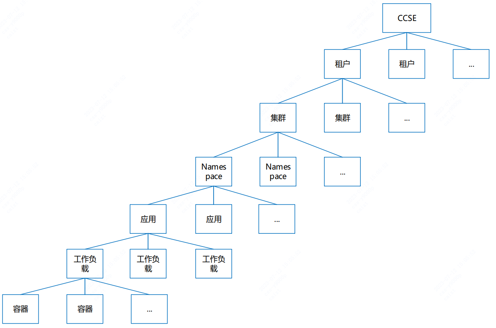

容器
# Docker
Docker是一个高效的轻量级容器化解决方案，可以让应用程序快速部署，安全运行，并且使其更容易跨环境迁移和管理。
Docker 可以为应用程序提供一个可复用的容器，从而可以在同一操作系统中和不同操作系统中部署应用，实现跨平台应用开发。它可以简化应用的部署，提高性能，确保应用程序的完整性和可靠性，降低运维成本。
优点：
- 节约资源：通过分割物理机的硬件资源，将其抽象出来，在需要的时候为不同的容器提供资源，这样就能减小磁盘和内存的开销；
- 轻量级：Docker容器本身只有几百兆的大小，而且不需要安装宿主操作系统，能够极大地缩小应用程序启动时间；
- 灵活性：支持跨平台的部署，可以更灵活的部署应用程序和微服务；
- 弹性：可以更加简单的增加节点，并能够实现服务的弹性扩容和缩容；
- 安全性：根据容器隔离，可以避免恶意攻击，提高应用程序的安全性；
- 可重复性：可以在任何地方重复利用，从而大大减少了管理时间和成本；
- 可移植性：可以在开发环境和生产环境之间更加容易的移植。
# 常用命令
# 一、镜像管理
| 命令 | 说明 | 示例 |
|---|---|---|
docker images | 列出本地所有镜像 | docker images |
docker pull <镜像名> | 从仓库拉取镜像 | docker pull nginx:latest |
docker build -t <镜像名> . | 根据 Dockerfile 构建镜像 | docker build -t myapp:1.0 . |
docker rmi <镜像ID/名称> | 删除本地镜像 | docker rmi nginx:latest |
docker tag <源镜像> <目标镜像> | 为镜像添加标签 | docker tag myapp:1.0 myapp:latest |
# 二、容器管理
| 命令 | 说明 | 示例 |
|---|---|---|
docker run [选项] <镜像> [命令] | 创建并启动容器 | docker run -d -p 80:80 --name web nginx |
docker ps | 查看运行中的容器 | docker ps |
docker ps -a | 查看所有容器（包括已停止的） | docker ps -a |
docker start/stop/restart <容器ID/名称> | 启动/停止/重启容器 | docker stop web |
docker rm <容器ID/名称> | 删除已停止的容器 | docker rm web |
docker exec -it <容器ID/名称> <命令> | 进入容器执行命令 | docker exec -it web /bin/bash |
docker logs <容器ID/名称> | 查看容器日志 | docker logs -f web |
# 三、数据与网络
| 命令 | 说明 | 示例 |
|---|---|---|
docker volume create <卷名> | 创建数据卷 | docker volume create mydata |
docker run -v <卷名>:<容器路径> ... | 挂载数据卷 | docker run -v mydata:/app/data nginx |
docker network create <网络名> | 创建自定义网络 | docker network create mynet |
docker network connect <网络名> <容器名> | 将容器连接到网络 | docker network connect mynet web |
# 四、系统与清理
| 命令 | 说明 | 示例 |
|---|---|---|
docker system df | 查看磁盘使用情况 | docker system df |
docker system prune | 清理未使用的资源（谨慎使用） | docker system prune -a |
docker inspect <对象ID/名称> | 查看镜像/容器的详细信息 | docker inspect nginx |
# 五、其他高频命令
进入容器终端
docker exec -it <容器ID/名称> /bin/sh # 或 /bin/bash1查看容器 IP 地址
docker inspect --format='{{.NetworkSettings.IPAddress}}' <容器ID>1强制删除正在运行的容器
docker rm -f <容器ID/名称>1构建并推送镜像到仓库
docker build -t username/app:tag . docker push username/app:tag1
2
# 六、Docker Compose 常用命令
docker-compose up -d | 根据配置文件启动所有服务（后台运行）。 |
|---|---|
docker-compose down | 停止并删除所有容器、网络和数据卷（默认不删除持久化卷）。 |
docker-compose ps | 查看所有服务的状态。 |
docker-compose logs <服务名> | 查看指定服务的日志。 |
docker-compose build | 重新构建自定义镜像（如果服务配置了build选项）。 |
docker-compose exec <服务名> <命令> | 进入指定服务的容器执行命令（如docker-compose exec db mysql）。 |
# 常用选项说明
-d：后台运行容器-p <主机端口>:<容器端口>：端口映射--name <名称>：指定容器名称-e <环境变量>：设置环境变量（如-e MYSQL_ROOT_PASSWORD=123456）--rm：容器退出时自动删除--network <网络名>：指定容器网络
# 常见问题解决
- 端口冲突 ：检查
docker ps占用端口，或修改-p参数。 - 容器无法访问 ：确保容器已暴露端口（
EXPOSE）且防火墙允许访问。 - 镜像拉取失败 ：检查网络或切换镜像源（如
docker pull registry.cn-hangzhou.aliyuncs.com/...）。
如果需要更详细的命令用法，可以运行 docker <命令> --help 查看帮助文档。
# 镜像 vs 容器
概念对比：
| 特性 | 镜像（Image） | 容器（Container） |
|---|---|---|
| 状态 | 只读：不可修改，作为创建容器的模板。 | 可读写：运行时可修改（如生成日志、写入数据）。但容器的修改不会影响原始镜像。 |
| 生命周期 | 持久化：一旦创建，除非被删除，否则一直存在。 | 临时性：可启动、停止、暂停、删除。容器停止后，其可写层的数据会保留，但删除容器后数据会丢失（除非使用 Volume）。 |
| 存储结构 | 由多个只读层（Layer）组成（Union File System）。 | 在镜像层之上增加一个可写层（Container Layer）。 |
| 用途 | 用于创建容器，可被多个容器共享。 | 用于运行应用，每个容器相互隔离。 |
命令对比：
| 操作 | 镜像相关命令 | 容器相关命令 |
|---|---|---|
| 创建 | docker build（构建镜像） | docker run（基于镜像启动容器） |
| 查看列表 | docker images | docker ps（查看运行中的容器） |
| 删除 | docker rmi <镜像名> | docker rm <容器ID> |
| 持久化 | 镜像本身不可变，但可通过docker commit从容器生成新镜像 | 容器数据默认在删除后丢失，需通过Volume持久化 |
# 原理
说起Docker，基本上就是指容器。容器被称为轻量级的虚拟化技术，实际上是不准确的。确切地说，容器是一种对进程进行隔离的运行环境。
本文提到的进程、Docker等概念或软件均以Linux平台为准。
我们知道进程是Linux操作系统执行任务的最小单元，一个时间同步服务是一个进程，一个Java服务是一个进程，一个Nginx服务是一个主进程+若干工作进程，总之，把一个系统比作一个办公室，进程就是一个个打工人：正常情况下，一个进程是能感知到其他进程的存在的，正如一个打工人放眼望去，办公室里还坐着一群其他打工人。进程的唯一标识是进程ID，用数字1、2、3……表示，好比打工人的工牌号，大家都各不一样。
而容器技术首先要解决的就是进程的隔离，即一个进程在运行的时候看不到其他进程。如何让一个打工人在工作时看不到其他打工人呢？方法是给这个打工人带一个VR眼镜，于是他看到的不是一个真实的办公室，而是一个虚拟的办公室。在这个虚拟办公室中，只有他一个打工人，没有别人。在Linux系统中，对一个进程进行隔离，主要是通过Namespace和Cgroup两大机制实现的。一个被隔离的进程，操作系统也会正常分配进程ID，比如12345，但是隔离进程自己看到的ID总是1，好比打工人的工牌是12345，但他自己通过VR眼镜看到的工牌号却是1，感觉自己是1号员工似的。
例如：制作一个Docker镜像，然后以Docker模式启动这个Python服务程序，再看看进程ID，从进程自己的视角看，它看到的进程ID总是
1，并且，用/ps看不到其他进程，只能看到自己。再用/ls看一下磁盘，看到的也不是系统的根目录，而是Docker给挂载的一个虚拟的文件系统。但其实从操作系统看，这个Docker进程和其他进程一样，也有一个唯一的进程ID为10475。
一个容器进程本质上是一个运行在沙盒中的隔离进程，由Linux系统本身负责隔离，Docker只是提供了一系列工具，帮助我们设置好隔离环境后，启动这个进程。
1、最基本的隔离就是进程之间看不到彼此，这是由Linux的Namespace机制实现的。进程隔离的结果就是以隔离方式启动的进程看到的自身进程ID总是1，且看不到系统的其他进程。
2、第二种隔离就是隔离系统真实的文件系统。Docker利用Linux的mount机制，给每个隔离进程挂载了一个虚拟的文件系统，使得一个隔离进程只能访问这个虚拟的文件系统，无法看到系统真实的文件系统。至于这个虚拟的文件系统应该长什么样，这就是制作Docker镜像要考虑的问题。比如我们的Python程序要正常运行，需要一个Python3解释器，需要把用到的第三方库如psutil引入进来，这些复杂的工作被简化为一个Dockerfile，再由Docker把这些运行时的依赖打包，就形成了Docker镜像。我们可以把一个Docker镜像看作一个zip包，每启动一个进程，Docker都会自动解压zip包，把它变成一个虚拟的文件系统。
3、第三种隔离就是网络协议栈的隔离，这个最不容易理解。
我们举个例子：在Docker中运行docker run redis:latest，然后在宿主机上写个程序连接127.0.0.1:6379，是无法连接到Redis的，因为Redis虽然监听127.0.0.1:6379这个端口，但Linux可以为进程隔离网络，Docker默认启动的Redis进程拥有自己的网络名字空间，与宿主机不同：
┌──────────────┐ ┌─────────────────────────┐
│redis: │ │app: │
│ listen: 6379│ │ connect: 127.0.0.1:6379│
├──────────────┤ ├─────────────────────────┤
│127.0.0.1:6379│ │ 127.0.0.1 │
└──────────────┘ └─────────────────────────┘
2
3
4
5
6
要让宿主机访问到Redis，可以用-p 6379:6379把Redis进程的端口号映射到宿主机，从而在宿主机上访问Redis：
┌──────────────┐ ┌─────────────────────────┐
│redis: │ │app: │
│ listen: 6379│ │ connect: 127.0.0.1:6379│
├──────────────┤ ├─────────────────────────┤
│127.0.0.1:6379│ │ 127.0.0.1:6379 │
└──────────────┘ └─────────────────────────┘
│ ▲
│ │
└─────────────────────┘
2
3
4
5
6
7
8
9
因此，在Linux的网络名字空间隔离下，Redis进程和宿主机进程看到的IP地址127.0.0.1表面上一样，但实际上是不同的网络接口。
我们再看一个更复杂的例子。如果我们要运行ZooKeeper和Kafka，先启动ZooKeeper：
docker run -p 2181:2181 zookeeper:latest
再启动Kafka，发现Kafka是无法连接ZooKeeper的，原因是，Kafka试图连接的127.0.0.1:2181在它自己的网络接口上并不存在：
┌──────────────┐ ┌──────────────┐ ┌─────────────────────────────┐
│zookeeper: │ │kafka: │ │Host │
│ listen: 2181│ │ listen: 9092│ │ │
├──────────────┤ ├──────────────┤ ├──────────────┬──────────────┤
│127.0.0.1:2181│ │127.0.0.1:9092│ │127.0.0.1:9092│127.0.0.1:2181│
└──────────────┘ └──────────────┘ └──────────────┴──────────────┘
│ │ ▲ ▲
│ └────────────────┘ │
└────────────────────────────────────────────────┘
2
3
4
5
6
7
8
9
必须连接到ZooKeeper的IP:2181或者宿主机的IP:2181。直接指定IP并不是一个好的方式，我们应该利用Docker Compose，把ZooKeeper和Kafka运行在同一个网络名字空间里（例如上图，host可以是主机，或者某个容器），并通过{hostname}:{端口号}来访问ZooKeeper端口，让Docker自动把zookeeper名字解析为动态分配的IP地址。docker-compose.yml参考配置如下：
version: "3"
services:
zookeeper:
image: confluentinc/cp-zookeeper:7.3.0
hostname: zookeeper
container_name: zookeeper
environment:
- ALLOW_ANONYMOUS_LOGIN=yes
- ZOOKEEPER_CLIENT_PORT=2181 # 端口2181
- ZOOKEEPER_TICK_TIME=2000
kafka:
image: confluentinc/cp-kafka:7.3.0
container_name: kafka
ports:
- "9092:9092" # 绑定容器的9092端口到主机的9092端口
depends_on:
- zookeeper
environment:
KAFKA_BROKER_ID: 1
KAFKA_ZOOKEEPER_CONNECT: 'zookeeper:2181' # zk连接使用'{hostname}:{端口号}'
KAFKA_LISTENER_SECURITY_PROTOCOL_MAP: PLAINTEXT:PLAINTEXT,PLAINTEXT_INTERNAL:PLAINTEXT
KAFKA_ADVERTISED_LISTENERS: PLAINTEXT://localhost:9092,PLAINTEXT_INTERNAL://kafka:29092
KAFKA_OFFSETS_TOPIC_REPLICATION_FACTOR: 1
KAFKA_TRANSACTION_STATE_LOG_MIN_ISR: 1
KAFKA_TRANSACTION_STATE_LOG_REPLICATION_FACTOR: 1
2
3
4
5
6
7
8
9
10
11
12
13
14
15
16
17
18
19
20
21
22
23
24
25
26
# ports 和 expose
两种方式可以暴露容器的端口：ports和expose。
ports暴露容器端口到主机的任意端口或指定端口，不管是否指定主机端口，使用ports都会将端口暴露给主机。
ports:
- "80:80" # 绑定容器的80端口到主机的80端口
- "9000:8080" # 绑定容器的8080端口到主机的9000端口
- "443" # 绑定容器的443端口到主机的任意端口，容器启动时随机分配绑定的主机端口号
2
3
4
expose暴露容器给link到当前容器的容器，和ports的区别是，expose不会将端口暴露给主机。
expose:
- "3000"
- "8000" #将当前容器的端口3000和8000暴露给link到本容器的容器
2
3
# 虚拟机和容器比较
| 对比项 | 容器技术 | 虚拟机技术 |
|---|---|---|
| 隔离级别 | 进程级 | 操作系统级 |
| 隔离策略 | Cgroups | Hypervisor |
| 系统资源 | 0~5% | 5~15% |
| 启动速度 | 秒级 | 分钟级 |
| 镜像存储 | KB-MB | GB-TB |
| 性能 | 接近宿主机本地进程 | 低于宿主机 |
| 集群规模 | 一台宿主机可启动上千量级个容 器 | 一台宿主机只能运行几十 个虚拟机 |
| 高可用策略 | 弹性、负载、动态 | 备份、容灾、迁移 |
# docker-compose
Docker Compose 是 Docker 官方提供的工具，用于定义和运行多容器的 Docker 应用 。通过一个声明式的 YAML 文件（docker-compose.yml），可以配置多个服务（容器）、网络、数据卷等，并通过一条命令一键启动、停止或管理整个应用系统。
# 核心功能
- 多容器编排 在单个文件中定义多个相互关联的容器（如 Web 服务、数据库、缓存等），统一管理它们的启动顺序、依赖关系和配置。
- 简化操作
通过
docker-compose up一键部署所有服务，无需手动逐个运行docker run命令。 - 环境隔离 为不同项目创建独立的环境（如开发、测试、生产），避免端口冲突和依赖污染。
# 核心概念
| 概念 | 说明 |
|---|---|
| 服务（Service） | 对应一个容器的配置（如镜像、端口、环境变量、依赖等）。 |
| 网络（Network） | 定义容器间的通信规则（默认自动创建专用网络，服务可通过名称互相访问）。 |
| 卷（Volume） | 持久化容器数据（如数据库存储），避免容器删除后数据丢失。 |
示例：
version: '3' # 指定 Compose 文件版本
services:
webapp: # 服务名称
image: nginx:latest
ports:
- "80:80"
depends_on: # 依赖关系（先启动 db 和 redis）
- db
- redis
networks:
- my-network
db:
image: mysql:5.7
environment:
MYSQL_ROOT_PASSWORD: example
volumes:
- db_data:/var/lib/mysql # 数据卷持久化
redis:
image: redis:alpine
ports:
- "6379:6379"
volumes: # 定义数据卷
db_data:
networks: # 定义网络
my-network:
driver: bridge
2
3
4
5
6
7
8
9
10
11
12
13
14
15
16
17
18
19
20
21
22
23
24
25
26
27
28
29
30
# Kubernetes
K8s 的整体架构

| 概念 | 描述 |
|---|---|
| 集群 | 一个集群指容器运行所需要的资源组合，关联了若干服务器节点、负载均衡、网络、存储等资源。 |
| 容器 | 一个通过 Docker 镜像创建的运行实例，一个节点可运行多个容器。 |
| 镜像 | 是容器应用打包的标准格式，在部署容器化应用时可以指定镜像，镜像可以来自于 Docker Hub或者用户的私有 Registry。 |
| 主节点 （Master Node） | 是 Kubernetes 集群的管理者，运行着的服务包括 kube-apiserver、kube-scheduler、kube-controller-manager、etcd 和容器网络 等组件。一般3个管理节点组成 HA 的架构。 |
| 工作节点 （Worker Node） | 是 Kubernetes 集群中承担工作负载的节点，可以是虚拟机也可以是物理机。工作节点承担实际的 Pod 调度以及与管理节点的通信等。 一个工作节点上的服务包括 Docker 运行时环境、kubelet、Kube-Proxy 以及其它一些可选的 Addon 组件。 |
| 命名空间 （Namespace） | 为 Kubernetes 集群提供虚拟的隔离作用。Kubernetes 集群初始有 3 个命名空间，分别是默认命名空间 default、系统命名空间 kube-system 和 kube-public ，除此以外，管理员可以创建新的命名空间以满足需求。 |
| Pod | 是 Kubernetes 部署应用或服务的最小的基本单位。一个 Pod 封装多个应用容器（也可以只有一个容器）、存储资源、一个独立的网络 IP 以及管理控制容器运行方式的策略选项。 |
| 服务（Service） | 是真实应用服务的抽象，每一个服务后面都有很多对应的容器来提供支持，通过 Kube-Proxy 的 port 和服务 selector 决定服务请求传递给后端 的容器，对外表现为一个单一访问接口，外部不需要了解后端如何运行，这给扩展或维护后端带来很大的好处。 |
| 标签（labels） | 实质是附着在资源对象上的一系列 Key/Value 键值对，用于指定对用户有意义的对象的属性，标签对内核系统是没有直接意义的。标 签可以在创建一个对象的时候直接赋予，也可以在后期随时修改，每一个对象可以拥有多个标签，但 key 值必须唯一。 |
| 存储卷（Volume） | k8s 集群中的存储卷跟 Docker 的存储卷有些类似，只不过 Docker 的存储卷作用范围为一个容器，而 Kubernetes的存储卷的生命 周期和作用范围是一个 Pod。每个 Pod 中声明的存储卷由 Pod 中的所有容器共享。支持使用Persistent Volume Claim 即 PVC 这种逻辑 存储，使用者可以忽略后台的实际存储技术，具体关于 Persistent Volumn（pv）的配置由存储管理员来配置。 |
| 持久存储卷 | （Persistent Volume， PV）和持久存储卷声 明（Persistent Volume Claim，PVC） PV 和 PVC 使得 Kubernetes集群具备了存储的逻辑抽象能力，使得在配置 Pod 的逻辑里可以忽略对实际后台存储技术的配置，而把这项配 置的工作交给 PV 的配置者。存储的 PV 和 PVC 的这种关系，跟计算的 Node 和 Pod 的关系是非常类似的；PV 和Node 是资源的提供者， 根据集群的基础设施变化而变化，由 Kubernetes 集群管理员配置；而 PVC 和 Pod是资源的使用者，根据业务服务的需求变化而变化，由 Kubernetes 集群的使用者即服务的管理员来配置。 |
| Ingress | 授权入站连接到达集群服务的规则集合。你可以通过 Ingress 配置提供外部可访问的 URL、负载均衡、SSL、基于名称的虚拟主机 等。用户通过 POST Ingress 资源到 API server 的方式来请求 Ingress。 Ingress controller 责实现 Ingress，通常使用负载均衡器，它还 可以配置边界路由和其他前端，这有助于以 HA 方式处理流量。 |
| 镜像仓库（Registry） | Docker 的镜像存储中心通常被称为 Registry。需要获取私有镜像时，首先需要登录 Registry，然后拉取镜像。修改过镜像后，可以再次将 镜像推送回 Registry 中去。或者通过本地构建Docker镜像再推送到Registry 中。 |
| Deployment | 部署表示用户对 Kubernetes 集群的一次更新操作。可以是创建一个新的服务，更新一个新的服务，也可以是滚动升级一个服务。 Deployment 为 Pod 和 ReplicaSet 提供了一个声明式定义 (declarative) 方法，用来替代以前的ReplicationController 更方便的管理工作 负载。 |
# 主节点
Master主要包含 API Server、Scheduler、Controllers 三个组成部分， 以及用作存储的 etcd，它用来储存整个集群的状态。
- etcd：由CoreOS开发，是一个高可用、强一致性的键值存储，为Kubernetes集群提供储存服务，类似于zookeper。它会存储集群的整个配置和状态。主节点通过查询 etcd 以检查节点，容器的现状。
- API Server：kubernetes最重要的核心元件之一，提供资源操作的唯一入口（其他模块通过API Server查询或修改资源对象，只有API Server才能直接操作etcd），并提供认证、授权、访问控制、API注册和发现等机制。
- Scheduler：负责资源的调度，按照预定的调度策略将 Pod（k8s中调度的基本单位）调度到相应的Node上，这里说的 Node 就是Work Node，当然如果是只有一个节点的集群，Master 也会同时作为 Work Node。
- Controllers：通过 API Server 查询要控制的资源对象的预期状态，它检查其管控的对象的当前状态，确保它们始终处于预期的工作状态，它们的工作包括比如故障检测、自动扩充、减少、滚动更新等。控制器主要有Deployment、StatuefulSet、Service、DaemonSet、Ingress
# 工作节点
可以是物理机也可以是虚拟机器。Node 上运行的主要 K8s 组件有kubelet、kube-proxy、Container Runtime 、Pod 等。
# kubelet
K8s 集群的每个工作节点上都会运行一个 kubelet 程序 维护容器的生命周期，它接收并执行Master 节点发来的指令，管理节点上的 Pod 及 Pod 中的容器。同时也负责Volume（CVI）和网络（CNI）的管理。
每个 kubelet 程序会在 API Server 上注册节点自身的信息，定期向Master节点汇报自身节点的资源使用情况，并通过cAdvisor监控节点和容器的资源。
通过运行 kubelet，节点将自身的 CPU，RAM 和存储等计算机资源变成集群的一部分，相当于是放进了集群统一的资源管理池中，交由 Master 统一调配。
# Container Runtime
容器运行时负责与容器实现进行通信，完成像容器镜像库中拉取镜像，然后启动和停止容器等操作， 引入容器运行时另外一个原因是让 K8s 的架构与具体的某一个容器实现解耦，不光是 Docker 能运行在 K8s 之上，同样也让K8s 的发展按自己的节奏进行。
想要运行在我的生态里的容器，请实现我的CRI （Container Runtime Interface），Container Runtime 只负责调用CRI 里定义的方法完成容器管理，不单独执行 docker run 之类的操作。这个也是K8s 发现Docker 制约了它的发展在 1.5 后引入的。
# kube-proxy
为集群提供内部的服务发现和负载均衡，监听 API Server 中 Service 控制器和它后面挂的 endpoint 的变化情况，并通过 iptables 等方式来为 Service 的虚拟IP、访问规则、负载均衡。
# Pod
Pod 是 K8s 中的最小调度单元。我们的应用程序运行在容器里，而容器又被分装在 Pod 里。一个 Pod 里可以有多个容器，也可以有多个容器。没有统一的标准，是单个还是多个，看要运行的应用程序的性质。不过一个 Pod 里只有一个主容器，剩下的都是辅助主容器工作的。
比如做服务网格 Istio 的 Envoy 网关，就是放在Pod的辅助容器运行来实现流量控制的。 这就是 K8s 的容器设计模式里最常用的一种模式：sidecar。顾名思义，sidecar 指的就是我们可以在一个Pod中，启动一个辅助容器，来完成一些独立于主进程（主容器）之外的工作。
# Q：有了Docker为啥还需要k8s？
Docker是一个容器编排工具，可以帮助我们管理应用程序。但如果想要管理大量的容器，就需要更为强大的编排工具，而 K8s 就是这样一个工具。
相比于Docker，K8S有以下优势：
- 高可用性：可以设置Pod的副本数，保证服务的良好运行。
- 自动伸缩：可根据实际情况自动伸缩，自动添加或减少节点；可以有效地根据负载情况调整Pod实例数。
- 容易管理：提供了一个完整的系统来管理Docker容器，可以使DevOps开发更加高效。
- 安全性：可以提供完善的安全性，包括限制访问，配置安全策略等。
- 更好的传输：使用Service和Ingress提供了一个容器化的感知和管理层来实现对网络的透明性。
# 逻辑关系
- CCSE与租户一对多
- 租户与集群一对多
- 集群和命名空间一对多
- 命名空间与应用一对多
- 应用与工作负载一对多
- 工作负载与容器实例一对多
应用不是必须的，单个namespace需要部署多个应用时通过应用进行逻辑隔离
权限控制：
- 租户创建者拥有租户的最高权限
- 租户创建者按组件角色给成员授权
- 成员数据权限可细化到命名空间级别
资源隔离：
- 多个租户的数据相互隔离，互不干扰
- 多个应用通过namespace隔离
# 工作负载
# 故障迁移
工作负载A设定的实例（Pod）数为四个，分布在不同的主机上。某一时刻某台主机（包含两个Pod）突然挂掉，系统自动在其他健康的节点上生成两个新实例，故障迁移保证了工作负载的实例数永远与设置的一样，保证了工作负载的高可用
# 弹性伸缩
垂直伸缩与水平伸缩：
- 垂直(Vertical)伸缩：调整节点或服务的资源配额。
- 水平(Horizontal)伸缩：调整节点或服务的数量。
CCSE支持Pod自动水平伸缩，监测的指标包括CPU使用率和内存使用率。如CPU使用率超80%时，自动扩容到5个Pod，低于80%时缩容到3个。
扩缩容性能为秒级。
局限：水平伸缩只适用于无状态服务，具有状态的服务（如MySQL具有数据状态）不适合制作容器镜像。
# 路由-Service
Service是一个抽象概念，定义了多个Pod的逻辑合集和访问Pod的策略。Service 有自己的 IP 和端口，Service 为 Pod 提供了负载均衡能力。
- 网络代理模式：iptables
- 工作负载需要对外开放访问端口时，可以创建一个或多个Service
- 访问方式：支持NodePort 和 ClusterIP，支持Headless Service
- 支持四层负载的TCP/UDP协议
- 集群部署时设定NodePort端口范围， NodePort端口在集群中唯一
使用：
- 创建工作负载时可同时创建Service，也可以单独创建Service
- 删除工作负载时同时删除工作负载相关的Service
- 容器端口和服务端口建议设置成一样
# 负载均衡
Kubernetes内置服务注册、服务发现与负载均衡插件。一个工作负载会暴露两个访问地址：
- 内部访问：服务名 + 容器端口
- 外部访问：主机ip + 主机端口
Nginx-ingress 是 K8s 集群默认的负载均衡器，主要负责向外暴露服务，同时提供负载均衡等附加功能；支持 七层（HTTP）/四层（TCP/UDP）的代理功能。
- K8S集群部署时会默认部署一个Nginx-ingress到kubesystem命名空间，作为集群默认的负载均衡器
- 支持在一个集群的多个命名空间部署多个Nginx-ingress，支持为命名空间指定Nginx-ingress
- 部署Nginx-ingress时指定对外开放的端口范围
- 应用创建的ingress对象存放在应用所属命名空间指定的Nginx-ingress的命名空间中
# 集群内访问
集群内应用的相互访问采用固定域名（应用名）的方式
如果两个应用在同一个命名空间，则直接使用“应用名:容器端口”；

如果两个应用跨了命名空间，则使用“应用名.命名空间:容器端口”

当nginx容器访问tomcat应用时，是由nginx容器所在主机的iptables做负载均衡，主机的iptables由k8s的组件kube-proxy动态更新

# 集群外访问
应用的访问量小且不需要做HTTPS 这种情况下，可以直接使用VIP加NodePort的形式。为应用创建一个NodePort类型的Service，这样每台K8S主机上都会暴露一个主机端口（比如30000），通过主机IP加这个主机端口就可以转发到后端的Pod。K8S的Master主机上已经安装了Keepalived，VIP保证了高可用。

应用的访问量大或者需要配置HTTPS 在K8S集群外的主机上搭建一套LVS加Nginx，在Nginx上为每个应用配置SSL证书，Nginx转发到若干台K8S主机的NodePort上。